Trend, Season and Simple Forecasting
Moving averages, classical decomposition and exponential smoothing — from the spreadsheet to R
Why start here?
The methods everyone skips
Most forecasting courses jump straight to ARIMA and ETS. That is a mistake.
Before any model is estimated, three questions have to be answered from the data itself:
- Is there a trend, and is it straight?
- Is there a season, and is it fixed or growing with the level?
- What is left over, and does it look like noise?
Classical decomposition answers all three with arithmetic a student can do by hand — averages, ratios and one regression. Once you can see the components, every later model becomes a statement about them.
Roadmap
| Part | Topic | Data |
|---|---|---|
| 1 | Components and the two models | quarterly car sales |
| 2 | Moving averages and the centred MA | quarterly car sales |
| 3 | Ratio-to-moving-average seasonal indices | quarterly car sales |
| 4 | Deseasonalise, fit trend, forecast | quarterly car sales |
| 5 | Additive decomposition | daily hits |
| 6 | Exponential smoothing: SES, Holt, Holt–Winters | monthly series |
| 7 | Application: monthly car sales in Pakistan | PAMA-style monthly data |
| 8 | Accuracy, diagnostics, pitfalls | all |
Part 1 · The components
What a series is made of
A seasonal series is usually written as four pieces:
\[ Y_t = T_t \times S_t \times C_t \times I_t \qquad \text{(multiplicative)} \]
\[ Y_t = T_t + S_t + C_t + I_t \qquad \text{(additive)} \]
- \(T_t\) — trend: the slow movement of the level
- \(S_t\) — season: a pattern that repeats every \(m\) periods (\(m = 4\) quarterly, \(12\) monthly)
- \(C_t\) — cycle: longer swings with no fixed length; in practice we merge it into the trend and speak of a trend–cycle
- \(I_t\) — irregular: what is left
Classical decomposition estimates \(T\) first, removes it, then estimates \(S\), then calls the residue \(I\).
Additive or multiplicative?
Look at the seasonal swings as the level rises.
- Additive — the peaks and troughs stay the same distance from the trend. Seasonal effect measured in units. Indices sum to 0.
- Multiplicative — the peaks and troughs stay the same proportion of the trend, so they widen as the series grows. Seasonal effect measured as a ratio. Indices sum to \(m\).
Car sales, electricity demand and most Pakistani nominal series are multiplicative. Temperature is additive.
The data in your workbook
Sixteen quarters of car sales, in thousands of units.
Always plot first
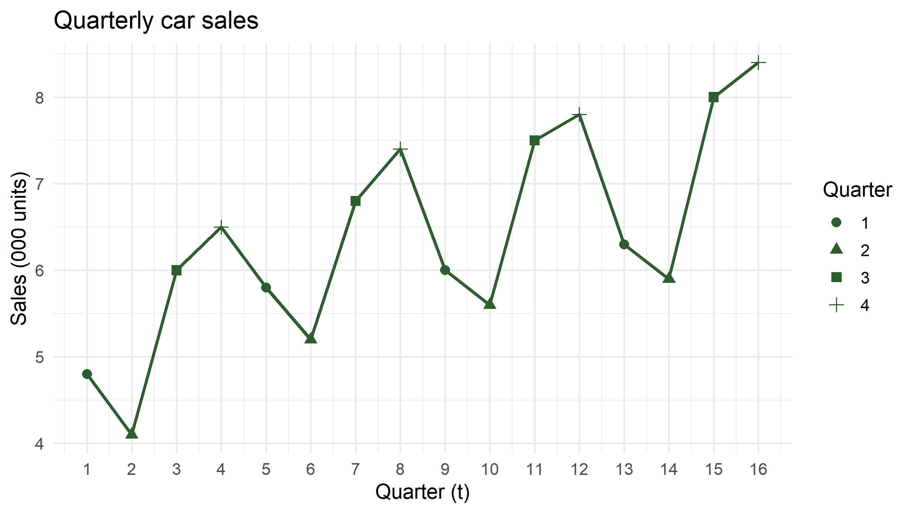
Two things are visible without any model: the level drifts up by roughly 0.15 per quarter, and Q2 is always the low point while Q4 is always the high point.
The seasonal plot
Overlaying years is the fastest seasonality check.
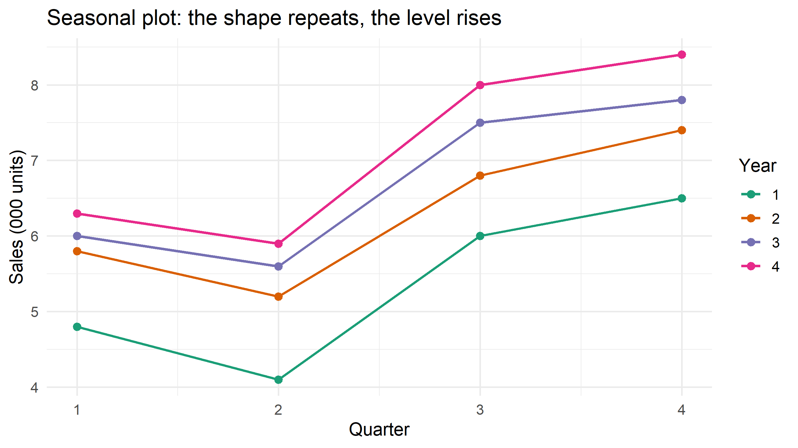
Parallel lines that shift upward mean a stable seasonal shape on a rising trend — exactly what decomposition assumes.
Part 2 · Moving averages
A moving average is a local mean
A \(k\)-term moving average replaces each observation by the average of its neighbours:
\[ \hat{T}_t = \frac{1}{k}\sum_{j=-h}^{h} y_{t+j}, \qquad k = 2h+1 \]
- Odd \(k\) (3, 5, 7) is naturally centred on \(t\).
- Larger \(k\) smooths more: it kills noise but also flattens genuine turning points and costs you \(h\) observations at each end.
- With \(k = m\) (the seasonal period) the average covers one full year, so the seasonal effect cancels out. That is the whole trick.
The problem with even \(k\)
For quarterly data we need \(k = 4\) to sweep out the season. But a 4-term average of \(y_1,\dots,y_4\) sits at time 2.5, not at any observation.
The fix is to average two consecutive 4-term averages. This is the centred moving average, written \(2\times4\)-MA:
\[ \text{CMA}_t = \frac{\text{MA}_{t-0.5} + \text{MA}_{t+0.5}}{2} = \frac{\tfrac12 y_{t-2} + y_{t-1} + y_t + y_{t+1} + \tfrac12 y_{t+2}}{4} \]
The half-weights at the ends are what makes it land on \(t\). For monthly data the same logic gives the \(2\times12\)-MA with weights \(\tfrac{1}{24},\tfrac{1}{12},\dots,\tfrac{1}{12},\tfrac{1}{24}\).
Computing both columns
cars_ma <- cars |>
mutate(
# MA(4): average of t-2, t-1, t, t+1 → sits at t - 0.5
ma4 = (lag(sales, 2) + lag(sales, 1) + sales + lead(sales, 1)) / 4,
# CMA(4): average of the two neighbouring MA(4) values → sits at t
cma4 = (ma4 + lead(ma4)) / 2
)
cars_ma |> select(t, quarter, sales, ma4, cma4) |> head(8) |> show_tbl()| t | quarter | sales | ma4 | cma4 |
|---|---|---|---|---|
| 1 | 1 | 4.8 | NA | NA |
| 2 | 2 | 4.1 | NA | NA |
| 3 | 3 | 6.0 | 5.350 | 5.4750 |
| 4 | 4 | 6.5 | 5.600 | 5.7375 |
| 5 | 1 | 5.8 | 5.875 | 5.9750 |
| 6 | 2 | 5.2 | 6.075 | 6.1875 |
| 7 | 3 | 6.8 | 6.300 | 6.3250 |
| 8 | 4 | 7.4 | 6.350 | 6.4000 |
The first CMA appears at \(t = 3\) and the last at \(t = 14\): a \(2\times4\)-MA costs two observations at each end.
The one-line version
The weighted form gives the identical column without any lag bookkeeping:
cars_ma <- cars_ma |>
mutate(cma_direct = as.numeric(
stats::filter(sales, filter = c(0.5, 1, 1, 1, 0.5) / 4, sides = 2)
))
all.equal(cars_ma$cma4, cars_ma$cma_direct)#> [1] TRUEAlignment: the classic spreadsheet bug
In a spreadsheet nothing stops you writing the CMA one row too high. The numbers still look plausible, and the seasonal indices come out wrong.
| quarter | correct | shifted |
|---|---|---|
| 1 | 0.9307 | 0.9342 |
| 2 | 0.8364 | 0.8220 |
| 3 | 1.0915 | 1.0981 |
| 4 | 1.1414 | 1.1457 |
Q2’s index moves by more than a full percentage point of the level. Whenever you replicate a spreadsheet, check that the first CMA sits at \(t = m/2 + 1\) — here, quarter 3.
How much smoothing?
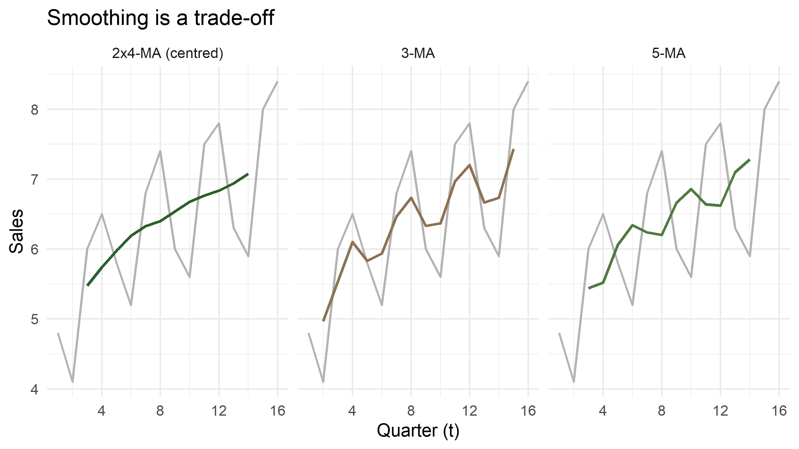
The 3-MA still wobbles with the season because it does not cover a full year. Only a span equal to the seasonal period removes the season cleanly.
Part 3 · Seasonal indices
Step 1 — detrend by division
If \(Y_t = T_t S_t I_t\) and the CMA estimates \(T_t\), then
\[ \frac{Y_t}{\text{CMA}_t} \approx S_t \times I_t \]
This is the ratio-to-moving-average, the St, It column of your sheet. For an additive series you subtract instead of divide.
cars_ratio <- cars_ma |>
mutate(ratio = sales / cma4)
cars_ratio |> select(t, quarter, sales, cma4, ratio) |> slice(3:10) |> show_tbl()| t | quarter | sales | cma4 | ratio |
|---|---|---|---|---|
| 3 | 3 | 6.0 | 5.4750 | 1.0959 |
| 4 | 4 | 6.5 | 5.7375 | 1.1329 |
| 5 | 1 | 5.8 | 5.9750 | 0.9707 |
| 6 | 2 | 5.2 | 6.1875 | 0.8404 |
| 7 | 3 | 6.8 | 6.3250 | 1.0751 |
| 8 | 4 | 7.4 | 6.4000 | 1.1563 |
| 9 | 1 | 6.0 | 6.5375 | 0.9178 |
| 10 | 2 | 5.6 | 6.6750 | 0.8390 |
Step 2 — average out the irregular
Each quarter now has three or four ratios. Averaging them cancels \(I_t\) and leaves \(S_t\).
| quarter | index_raw | index |
|---|---|---|
| 1 | 0.9322 | 0.9307 |
| 2 | 0.8378 | 0.8364 |
| 3 | 1.0933 | 1.0915 |
| 4 | 1.1433 | 1.1414 |
#> [1] 4.006614#> [1] 4Why normalise?
The raw averages will not sum to exactly 4 — here they miss by a fraction of a percent. If you skip the rescaling, the seasonal factors quietly add or subtract level from every forecast you make.
Rescale by \(m / \sum \hat S_j\) for multiplicative, and subtract the mean for additive:
Reading the indices
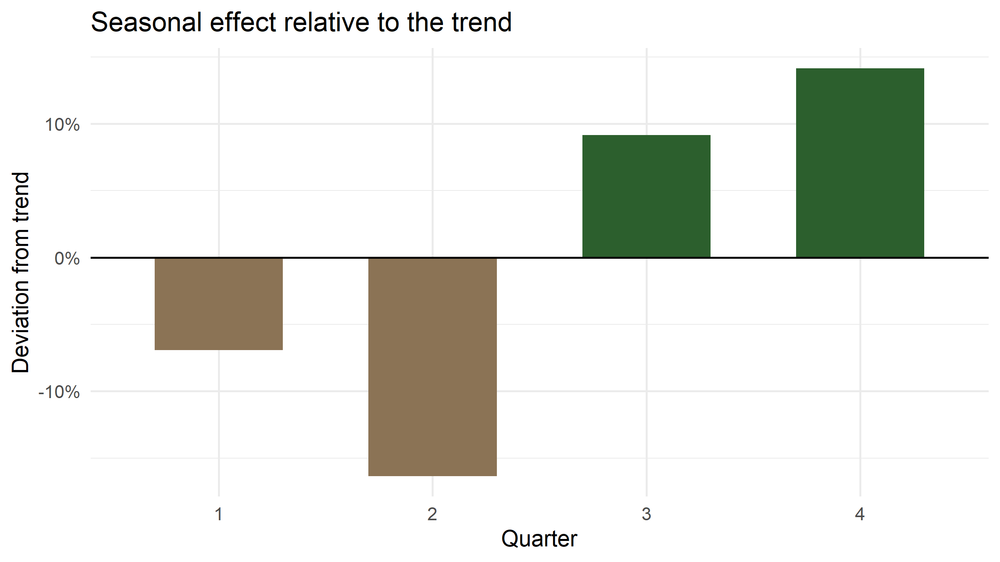
Q4 runs about 14% above trend, Q2 about 16% below. A dealer reading a 16% drop from Q1 to Q2 as a collapse in demand is reading the calendar, not the market.
Step 3 — the components
cars_dec <- cars_ratio |>
left_join(seasonal_tbl, by = join_by(quarter)) |>
mutate(
deseason = sales / index, # seasonally adjusted series
irregular = sales / (cma4 * index) # what the model cannot explain
)
cars_dec |> select(t, sales, cma4, index, deseason, irregular) |> slice(3:10) |> show_tbl()| t | sales | cma4 | index | deseason | irregular |
|---|---|---|---|---|---|
| 3 | 6.0 | 5.4750 | 1.0915 | 5.4968 | 1.0040 |
| 4 | 6.5 | 5.7375 | 1.1414 | 5.6947 | 0.9925 |
| 5 | 5.8 | 5.9750 | 0.9307 | 6.2321 | 1.0430 |
| 6 | 5.2 | 6.1875 | 0.8364 | 6.2173 | 1.0048 |
| 7 | 6.8 | 6.3250 | 1.0915 | 6.2297 | 0.9849 |
| 8 | 7.4 | 6.4000 | 1.1414 | 6.4832 | 1.0130 |
| 9 | 6.0 | 6.5375 | 0.9307 | 6.4470 | 0.9862 |
| 10 | 5.6 | 6.6750 | 0.8364 | 6.6956 | 1.0031 |
Seasonally adjusted vs raw
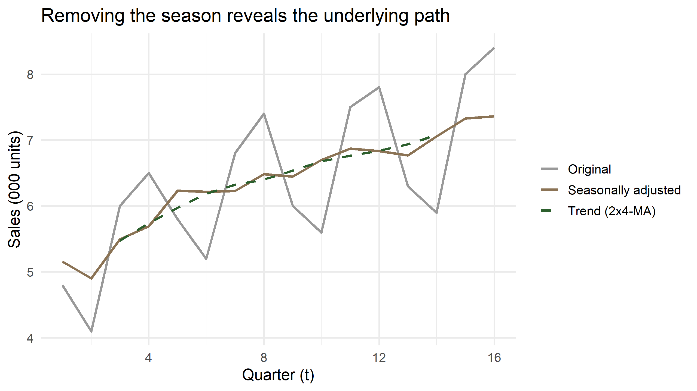
This is precisely what PBS, SBP and every statistical agency publish as “seasonally adjusted” — nothing more mysterious than dividing by an index.
Cross-check with decompose()
cars_ts <- ts(cars$sales, start = c(1, 1), frequency = 4)
dc <- decompose(cars_ts, type = "multiplicative")
tibble(
quarter = 1:4,
by_hand = seasonal_tbl$index,
decompose = as.numeric(dc$figure)
) |> show_tbl()| quarter | by_hand | decompose |
|---|---|---|
| 1 | 0.9307 | 0.9307 |
| 2 | 0.8364 | 0.8364 |
| 3 | 1.0915 | 1.0915 |
| 4 | 1.1414 | 1.1414 |
Identical to the last decimal. decompose() is the same recipe: centred MA, ratio, average by cycle position, normalise.
And with stl()
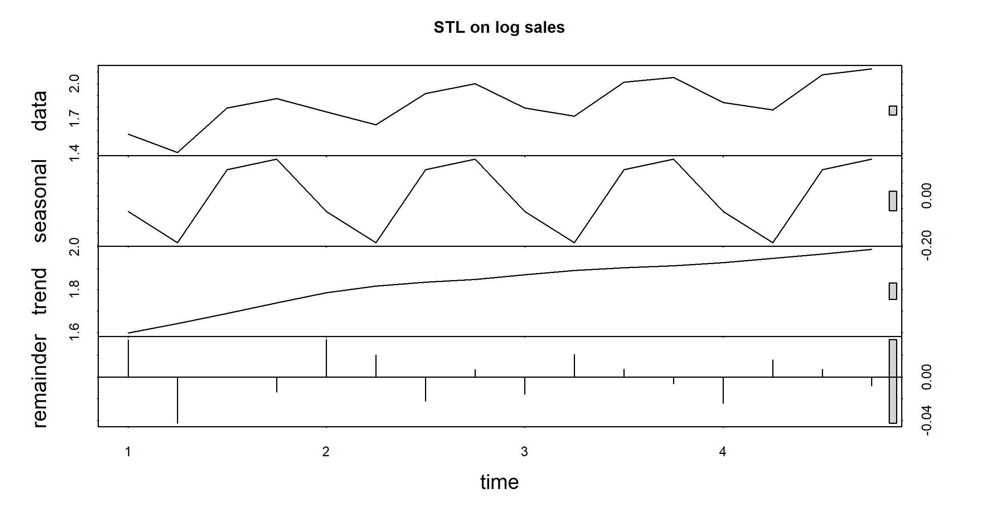
stl() is the modern workhorse: loess instead of simple averages, robust to outliers, and it allows the seasonal shape to evolve (s.window = 7 rather than "periodic"). Classical decomposition assumes the shape never changes.
Part 4 · Forecasting from the decomposition
The logic
You cannot extrapolate a moving average — it stops two periods from the end. So:
- Deseasonalise the series: \(D_t = Y_t / S_t\)
- Fit a trend to \(D_t\) — a straight line is usually enough
- Extrapolate the trend to \(t + h\)
- Re-seasonalise: \(\hat Y_{t+h} = \hat T_{t+h} \times S_{t+h}\)
Step 2 is where the regression enters, and it must be run on the deseasonalised series, not on raw sales.
Fitting the trend
#> (Intercept) t
#> 5.108042 0.147382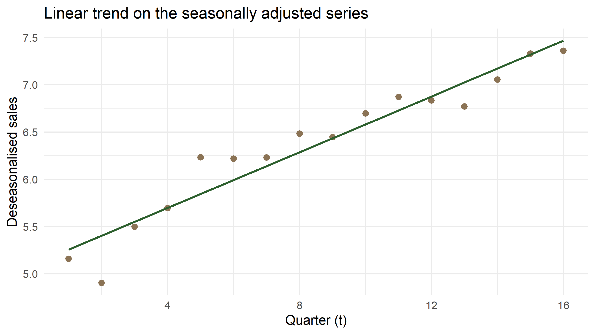
Fitted values and errors
| t | quarter | sales | trend_hat | index | fitted | error |
|---|---|---|---|---|---|---|
| 1 | 1 | 4.8 | 5.2554 | 0.9307 | 4.8910 | -0.0910 |
| 2 | 2 | 4.1 | 5.4028 | 0.8364 | 4.5188 | -0.4188 |
| 3 | 3 | 6.0 | 5.5502 | 1.0915 | 6.0583 | -0.0583 |
| 4 | 4 | 6.5 | 5.6976 | 1.1414 | 6.5033 | -0.0033 |
| 5 | 1 | 5.8 | 5.8450 | 0.9307 | 5.4397 | 0.3603 |
| 6 | 2 | 5.2 | 5.9923 | 0.8364 | 5.0118 | 0.1882 |
| 7 | 3 | 6.8 | 6.1397 | 1.0915 | 6.7018 | 0.0982 |
| 8 | 4 | 7.4 | 6.2871 | 1.1414 | 7.1762 | 0.2238 |
How good is the fit?
accuracy_tbl <- function(actual, fitted, label = "model") {
e <- actual - fitted
tibble(
model = label,
ME = mean(e, na.rm = TRUE),
MAE = mean(abs(e), na.rm = TRUE),
RMSE = sqrt(mean(e^2, na.rm = TRUE)),
MAPE = 100 * mean(abs(e / actual), na.rm = TRUE)
)
}
accuracy_tbl(cars_fit$sales, cars_fit$fitted, "decomposition + linear trend") |> show_tbl()| model | ME | MAE | RMSE | MAPE |
|---|---|---|---|---|
| decomposition + linear trend | 0.0041 | 0.1388 | 0.1817 | 2.4395 |
MAPE under 3% on a series with a 30% seasonal swing: the two components have done nearly all the work.
A common shortcut — and what it costs
A tempting shortcut is to regress raw sales on \(t\) and then multiply by the seasonal index. The slope looks fine, but the intercept has already absorbed the average seasonal level, so multiplying by \(S_t\) counts the season one and a half times.
| model | ME | MAE | RMSE | MAPE |
|---|---|---|---|---|
| trend on deseasonalised (correct) | 0.0041 | 0.1388 | 0.1817 | 2.4395 |
| trend on raw sales (shortcut) | -0.0200 | 0.2057 | 0.2425 | 3.3096 |
The fit is a third worse, and the gap grows with the forecast horizon.
Forecasting year 5
future <- tibble(t = 17:20, quarter = 1:4) |>
left_join(seasonal_tbl, by = join_by(quarter)) |>
mutate(
trend_hat = predict(trend_fit, newdata = pick(t)),
forecast = trend_hat * index
)
future |> select(t, quarter, trend_hat, index, forecast) |> show_tbl(digits = 3)| t | quarter | trend_hat | index | forecast |
|---|---|---|---|---|
| 17 | 1 | 7.614 | 0.931 | 7.086 |
| 18 | 2 | 7.761 | 0.836 | 6.491 |
| 19 | 3 | 7.908 | 1.092 | 8.632 |
| 20 | 4 | 8.056 | 1.141 | 9.195 |
The forecast in context
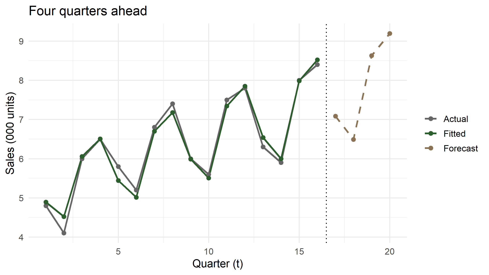
What this forecast assumes
Worth saying out loud to students, because the arithmetic hides it:
- the trend stays linear — no saturation, no policy shock
- the seasonal shape is fixed for all time
- the irregular component has no memory
- there is no uncertainty band, because we never modelled the errors
Every one of these is relaxed later by ETS and ARIMA. But the point estimate of a good decomposition is often within a few percent of theirs, and you can explain it to a secretary in a ministry.
Part 5 · The additive case
When the swings do not grow
Average daily hits on a website, five years of quarterly data — the Sheet1 (2) example from your workbook.
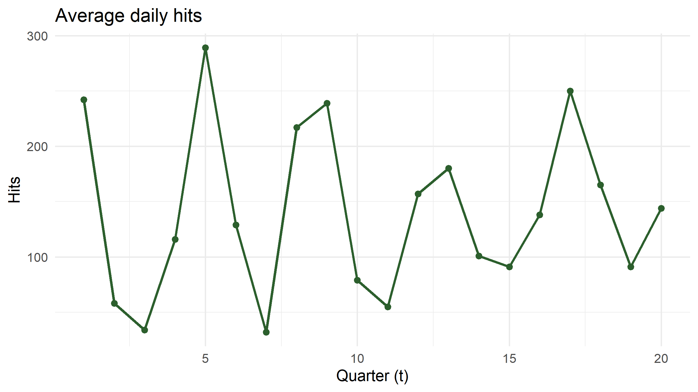
The quick method — and when it is legitimate
With no visible trend, the seasonal effect is simply each quarter’s mean minus the grand mean.
| quarter | q_mean | index_add |
|---|---|---|
| 1 | 240.0 | 99.65 |
| 2 | 106.4 | -33.95 |
| 3 | 60.6 | -79.75 |
| 4 | 154.4 | 14.05 |
grand#> [1] 140.35Seasonally adjusted series: \(Y_t - S_j\).
hits_sa <- hits |>
left_join(hits_idx, by = join_by(quarter)) |>
mutate(seas_adj = hits - index_add)
hits_sa |> select(t, quarter, hits, index_add, seas_adj) |> head(8) |> show_tbl(digits = 2)| t | quarter | hits | index_add | seas_adj |
|---|---|---|---|---|
| 1 | 1 | 242 | 99.65 | 142.35 |
| 2 | 2 | 58 | -33.95 | 91.95 |
| 3 | 3 | 34 | -79.75 | 113.75 |
| 4 | 4 | 116 | 14.05 | 101.95 |
| 5 | 1 | 289 | 99.65 | 189.35 |
| 6 | 2 | 129 | -33.95 | 162.95 |
| 7 | 3 | 32 | -79.75 | 111.75 |
| 8 | 4 | 217 | 14.05 | 202.95 |
The proper method, for comparison
If there is a trend, the quick method confuses trend with season and you must detrend first — by subtraction, since the model is additive.
hits_proper <- hits |>
mutate(
cma4 = (0.5 * lag(hits, 2) + lag(hits) + hits + lead(hits) + 0.5 * lead(hits, 2)) / 4,
diff = hits - cma4
) |>
summarise(raw = mean(diff, na.rm = TRUE), .by = quarter) |>
mutate(index_add = raw - mean(raw))
hits_idx |> select(quarter, quick = index_add) |>
left_join(hits_proper |> select(quarter, detrended = index_add), by = join_by(quarter)) |>
show_tbl(digits = 2)| quarter | quick | detrended |
|---|---|---|
| 1 | 99.65 | 94.70 |
| 2 | -33.95 | -28.95 |
| 3 | -79.75 | -83.08 |
| 4 | 14.05 | 17.33 |
Close, because the trend here is weak. On a trending series the two diverge sharply — which is why the detrended route is the default.
Additive vs multiplicative, side by side
| Additive | Multiplicative | |
|---|---|---|
| Model | \(Y = T + S + I\) | \(Y = T \times S \times I\) |
| Detrend | \(Y_t - \text{CMA}_t\) | \(Y_t / \text{CMA}_t\) |
| Indices sum to | 0 | \(m\) |
| Adjust | \(Y_t - S_j\) | \(Y_t / S_j\) |
| Use when | swings constant in units | swings constant in percent |
| Trick | — | take logs, then use additive |
Part 6 · Exponential smoothing
The idea
A moving average gives equal weight to the last \(k\) observations and none to the rest. That is an odd belief. Simple exponential smoothing instead lets weights fade geometrically:
\[ F_{t+1} = \alpha Y_t + (1-\alpha) F_t = \alpha \sum_{j\ge 0}(1-\alpha)^j\, Y_{t-j} \]
- \(\alpha\) near 1 → the forecast chases the last observation
- \(\alpha\) near 0 → the forecast is a long memory, almost a constant
- No trend, no season: every future period gets the same forecast
The SES sheet, reproduced
Twenty-four monthly observations, \(\alpha = 0.4\), starting level \(F_2 = Y_1\).
ses_data <- tibble(
date = seq(ymd("2010-01-01"), by = "month", length.out = 24),
y = c(97.6, 95.1, 90.3, 92.5, 89.8, 92.7, 94.4, 96.2,
88.9, 90.2, 88.2, 91.0, 89.3, 88.5, 93.7, 92.7,
94.7, 95.3, 94.7, 95.3, 94.7, 96.5, 99.2, 96.9)
)
ses <- function(y, alpha) {
# returns forecasts for t = 2 ... n+1, with F_2 = y_1
accumulate(y[-length(y)], \(f, obs) alpha * obs + (1 - alpha) * f, .init = y[1])
}The smoothing table
| date | y | forecast | error | abs_err | pct_err | sq_err |
|---|---|---|---|---|---|---|
| 2010-01-01 | 97.6 | NA | NA | NA | NA | NA |
| 2010-02-01 | 95.1 | 97.600 | -2.500 | 2.500 | 0.026 | 6.250 |
| 2010-03-01 | 90.3 | 97.600 | -7.300 | 7.300 | 0.081 | 53.290 |
| 2010-04-01 | 92.5 | 96.600 | -4.100 | 4.100 | 0.044 | 16.810 |
| 2010-05-01 | 89.8 | 94.080 | -4.280 | 4.280 | 0.048 | 18.318 |
| 2010-06-01 | 92.7 | 93.448 | -0.748 | 0.748 | 0.008 | 0.560 |
| 2010-07-01 | 94.4 | 91.989 | 2.411 | 2.411 | 0.026 | 5.814 |
| 2010-08-01 | 96.2 | 92.273 | 3.927 | 3.927 | 0.041 | 15.419 |
Accuracy, and choosing \(\alpha\)
| ME | MAE | MAPE | SSE |
|---|---|---|---|
| -0.104 | 2.89 | 3.117 | 253.64 |
Small differences from the spreadsheet come from Excel rounding each smoothed value to one decimal. R carries full precision.
Let the data pick \(\alpha\)
| alpha | sse |
|---|---|
| 0.77 | 236.1215 |
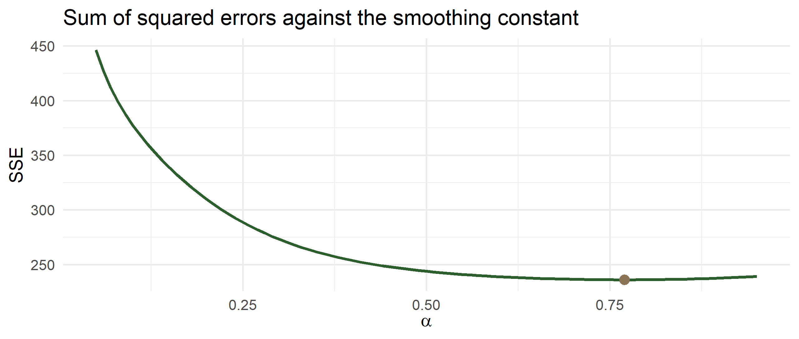
The same thing, in one line
ses_ts <- ts(ses_data$y, start = c(2010, 1), frequency = 12)
ses_opt <- HoltWinters(ses_ts, beta = FALSE, gamma = FALSE)
ses_opt$alpha#> [1] 0.698175ses_opt$SSE#> [1] 160.5603HoltWinters() with beta = FALSE, gamma = FALSE is simple exponential smoothing, with \(\alpha\) chosen by minimising the same SSE you just plotted by hand.
Holt: adding a trend
SES has no trend, so its forecast is flat — useless for a growing series. Holt adds a second recursion for the slope:
\[ \begin{aligned} \ell_t &= \alpha Y_t + (1-\alpha)(\ell_{t-1} + b_{t-1}) \\ b_t &= \beta(\ell_t - \ell_{t-1}) + (1-\beta) b_{t-1} \\ \hat Y_{t+h} &= \ell_t + h\, b_t \end{aligned} \]
The level is smoothed, then the change in level is itself smoothed. Unlike OLS, the slope is local: recent quarters count more than the first one.
Holt on the car sales
deseason_ts <- ts(cars_dec$deseason, start = c(1, 1), frequency = 4)
holt_fit <- HoltWinters(deseason_ts, gamma = FALSE)
c(alpha = holt_fit$alpha, beta = holt_fit$beta)#> alpha.alpha beta.beta
#> 1.0000000 0.3760964holt_fc <- tibble(
t = 17:20,
quarter = 1:4,
trend_hat = as.numeric(predict(holt_fit, n.ahead = 4))
) |>
left_join(seasonal_tbl, by = join_by(quarter)) |>
mutate(forecast_holt = trend_hat * index)
holt_fc |> select(t, quarter, trend_hat, forecast_holt) |> show_tbl(digits = 3)| t | quarter | trend_hat | forecast_holt |
|---|---|---|---|
| 17 | 1 | 7.484 | 6.965 |
| 18 | 2 | 7.608 | 6.363 |
| 19 | 3 | 7.733 | 8.441 |
| 20 | 4 | 7.857 | 8.969 |
Global trend vs local trend
future |>
select(t, quarter, ols_trend = forecast) |>
left_join(holt_fc |> select(t, holt = forecast_holt), by = join_by(t)) |>
mutate(difference = holt - ols_trend) |>
show_tbl(digits = 3)| t | quarter | ols_trend | holt | difference |
|---|---|---|---|---|
| 17 | 1 | 7.086 | 6.965 | -0.121 |
| 18 | 2 | 6.491 | 6.363 | -0.128 |
| 19 | 3 | 8.632 | 8.441 | -0.191 |
| 20 | 4 | 9.195 | 8.969 | -0.226 |
On a short, well-behaved series the two nearly agree. They diverge when the trend bends — and then the local method is usually the one you want.
Holt–Winters: trend and season together
Add a third recursion for the seasonal factors and you have the full method:
\[ \begin{aligned} \ell_t &= \alpha \frac{Y_t}{s_{t-m}} + (1-\alpha)(\ell_{t-1}+b_{t-1}) \\ b_t &= \beta(\ell_t-\ell_{t-1}) + (1-\beta) b_{t-1} \\ s_t &= \gamma \frac{Y_t}{\ell_t} + (1-\gamma) s_{t-m} \\ \hat Y_{t+h} &= (\ell_t + h b_t)\, s_{t+h-m} \end{aligned} \]
The key advantage over classical decomposition: \(\gamma > 0\) lets the seasonal shape evolve. In Pakistan, where tax and tariff changes reshape the calendar of demand, that matters.
Part 7 · Application: monthly car sales in Pakistan
The data
PAMA publishes monthly production and sales by category. The series below is a teaching series shaped like PAMA passenger-car sales: the June push before the new fiscal year, the July collapse after price and duty revisions, the 2020 lockdown, the 2022–23 import-compression crash, and the 2024–25 recovery as policy rates fell.
set.seed(614)
anchor_level <- c(`2015` = 11000, `2016` = 13500, `2017` = 15500, `2018` = 17500,
`2019` = 11000, `2020` = 9500, `2021` = 16500, `2022` = 15000,
`2023` = 6000, `2024` = 8000, `2025` = 12500, `2026` = 13000)
seas_true <- c(1.05, 0.92, 1.06, 1.00, 1.02, 1.30,
0.78, 0.92, 1.02, 1.05, 0.98, 0.90) # Jan ... Dec, sums to 12
pak <- tibble(date = seq(ymd("2015-01-01"), ymd("2025-12-01"), by = "month")) |>
mutate(
level = approx(x = as.numeric(ymd(paste0(names(anchor_level), "-06-15"))),
y = anchor_level,
xout = as.numeric(date), rule = 2)$y,
sales = round(level * seas_true[month(date)] * exp(rnorm(n(), 0, 0.07)))
) |>
select(date, sales)The series
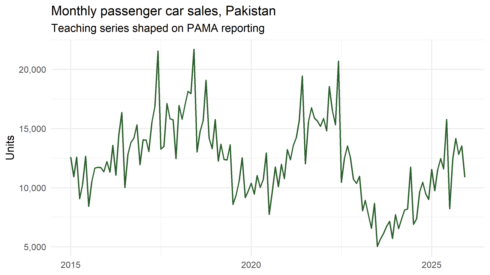
Three structural episodes in eleven years. Classical decomposition will handle the season well and the breaks badly — which is itself the lesson.
Seasonal subseries plot
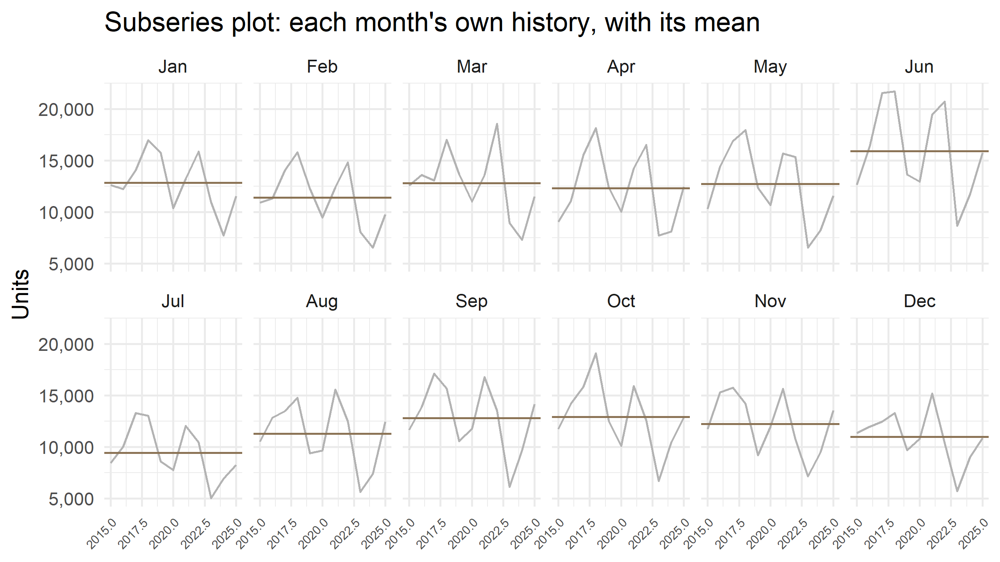
The 2×12 centred moving average
pak_dec <- pak |>
mutate(
trend = as.numeric(stats::filter(sales,
filter = c(0.5, rep(1, 11), 0.5) / 12, sides = 2)),
ratio = sales / trend,
mon = month(date)
)
pak_index <- pak_dec |>
summarise(index_raw = mean(ratio, na.rm = TRUE), .by = mon) |>
arrange(mon) |>
mutate(index = index_raw * 12 / sum(index_raw))
pak_index |>
transmute(month = month.abb[mon], index = round(index, 3)) |>
pivot_wider(names_from = month, values_from = index) |>
show_tbl(digits = 3)| Jan | Feb | Mar | Apr | May | Jun | Jul | Aug | Sep | Oct | Nov | Dec |
|---|---|---|---|---|---|---|---|---|---|---|---|
| 1.05 | 0.923 | 1.036 | 1.016 | 1.036 | 1.305 | 0.773 | 0.902 | 1.027 | 1.051 | 0.987 | 0.894 |
Trend and seasonally adjusted series
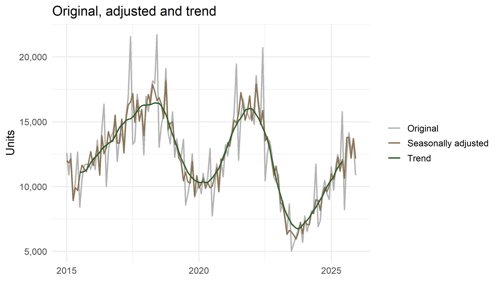
Notice the June spike disappears from the adjusted line. What remains is genuine news: the 2020 dip, the 2023 collapse, the recovery.
A proper forecasting test
Hold out the last twelve months. Estimate on the rest. Compare three rules.
#> [1] 120#> [1] 12Rule 1 — seasonal naive. The forecast for next March is last March. Crude, hard to beat, and the benchmark every model must clear.
Rule 2 — decomposition plus trend, with the trend fitted only to the last three years, because of the 2023 break.
Rule 3 — Holt–Winters multiplicative, which updates both level and season as it goes.
Rule 1: seasonal naive
snaive_fc <- test |>
mutate(forecast = train |> slice_tail(n = 12) |> pull(sales))
accuracy_tbl(snaive_fc$sales, snaive_fc$forecast, "seasonal naive") |> show_tbl(digits = 2)| model | ME | MAE | RMSE | MAPE |
|---|---|---|---|---|
| seasonal naive | 3517.08 | 3517.08 | 3681.85 | 28.89 |
Rule 2: decomposition plus linear trend
tr_dec <- train |>
mutate(
trend = as.numeric(stats::filter(sales, c(0.5, rep(1, 11), 0.5) / 12, sides = 2)),
ratio = sales / trend,
mon = month(date)
)
tr_index <- tr_dec |>
summarise(index_raw = mean(ratio, na.rm = TRUE), .by = mon) |>
mutate(index = index_raw * 12 / sum(index_raw))
tr_model <- tr_dec |>
left_join(tr_index, by = join_by(mon)) |>
mutate(t = row_number(), deseason = sales / index) |>
filter(t > n() - 36) # last three years only
lm_fit <- lm(deseason ~ t, data = tr_model)
dec_fc <- test |>
mutate(t = 121:132, mon = month(date)) |>
left_join(tr_index, by = join_by(mon)) |>
mutate(forecast = predict(lm_fit, newdata = pick(t)) * index)
accuracy_tbl(dec_fc$sales, dec_fc$forecast, "decomposition + trend") |> show_tbl(digits = 2)| model | ME | MAE | RMSE | MAPE |
|---|---|---|---|---|
| decomposition + trend | 7569.47 | 7569.47 | 7812.5 | 62.15 |
Rule 3: Holt–Winters
train_ts <- ts(train$sales, start = c(2015, 1), frequency = 12)
hw_fit <- HoltWinters(train_ts, seasonal = "multiplicative")
c(alpha = hw_fit$alpha, beta = hw_fit$beta, gamma = hw_fit$gamma)#> alpha.alpha beta.beta gamma.gamma
#> 0.4049314 0.3295493 0.4886703hw_fc <- test |>
mutate(forecast = as.numeric(predict(hw_fit, n.ahead = 12)))
accuracy_tbl(hw_fc$sales, hw_fc$forecast, "Holt-Winters multiplicative") |> show_tbl(digits = 2)| model | ME | MAE | RMSE | MAPE |
|---|---|---|---|---|
| Holt-Winters multiplicative | 196.97 | 740.68 | 860.65 | 6.44 |
The scoreboard
bind_rows(
accuracy_tbl(snaive_fc$sales, snaive_fc$forecast, "Seasonal naive"),
accuracy_tbl(dec_fc$sales, dec_fc$forecast, "Decomposition + trend"),
accuracy_tbl(hw_fc$sales, hw_fc$forecast, "Holt-Winters")
) |> arrange(MAPE) |> show_tbl(digits = 2)| model | ME | MAE | RMSE | MAPE |
|---|---|---|---|---|
| Holt-Winters | 196.97 | 740.68 | 860.65 | 6.44 |
| Seasonal naive | 3517.08 | 3517.08 | 3681.85 | 28.89 |
| Decomposition + trend | 7569.47 | 7569.47 | 7812.50 | 62.15 |
Report MAPE to a policy audience and RMSE to a technical one. Always show the naive benchmark: a model that cannot beat “same month last year” has earned nothing.
The forecasts, plotted
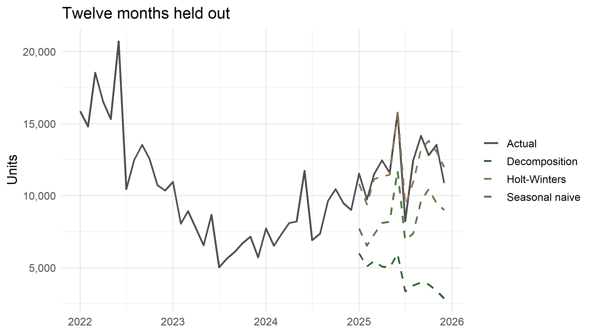
Part 8 · Diagnostics and pitfalls
Check what is left over
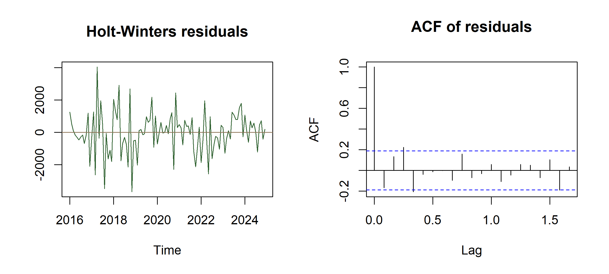
Box.test(resid_hw, lag = 24, type = "Ljung-Box")#>
#> Box-Ljung test
#>
#> data: resid_hw
#> X-squared = 44.72, df = 24, p-value = 0.006285If the ACF still shows spikes at lags 12 and 24, seasonality is left in the residuals and the seasonal component is mis-specified.
Four residual questions
- Mean zero? If not, the forecasts are biased — subtract the mean.
- No autocorrelation? Spikes in the ACF mean information was left on the table.
- Constant variance? Widening residuals call for logs.
- Roughly normal? Only needed for prediction intervals, not for the point forecast.
Failing (1) or (2) is serious. Failing (3) or (4) affects the intervals, not the centre.
Pitfalls specific to Pakistani data
Fiscal year vs calendar year. PAMA, FBR and PBS report July–June. A “year-on-year” figure from a fiscal-year table is not comparable with a calendar-year one. Decide your \(m\) origin and label it.
Moving holidays. Eid shifts about eleven days each year, so Ramadan demand migrates across months. A fixed monthly index cannot capture it — it shows up as a large irregular in two months each year. Remedies: a Ramadan-days regressor, or working in Hijri-adjusted months.
Trading-day effects. Months differ in working days; a 31-day month with five Fridays is not a 28-day February. Divide by working days before decomposing.
Structural breaks. Import compression in 2022–23 broke both level and seasonal shape. Fitting one global trend across a break gives a confident, wrong forecast. Fit after the break, or allow a break dummy.
Revisions. PBS and PAMA figures are revised. A forecast evaluated against revised data flatters itself; keep the vintage you actually had.
When classical decomposition is the wrong tool
- The first and last \(m/2\) observations get no trend estimate — awkward when the recent end is what you care about. STL and X-13 fill the ends.
- It assumes the seasonal shape never changes. Over ten years of Pakistani energy or auto data, that is rarely true.
- It is not robust to outliers: one lockdown month contaminates that month’s index for every year.
- There is no uncertainty. No standard errors, no intervals.
Use it to see the structure and to teach. Use STL, X-13ARIMA-SEATS, ETS or SARIMA to publish.
What we covered
| Step | Operation | R tool |
|---|---|---|
| 1 | Plot: time, seasonal, subseries | ggplot2 |
| 2 | Trend by centred moving average (2xm-MA) | stats::filter() |
| 3 | Detrend: ratio (multiplicative) or difference (additive) | mutate() |
| 4 | Seasonal index: average by cycle position, then normalise | summarise(.by =) |
| 5 | Deseasonalise, fit a trend, extrapolate, re-seasonalise | lm() or HoltWinters() |
| 6 | Evaluate out of sample against a naive benchmark | hold-out sample |
Exercises
The second sheet of the workbook holds another quarterly series:
72, 110, 117, 172, 76, 112, 130, 194, 78, 119, 128, 201, 81, 134, 141, 216. Run the full decomposition. Your Q4 index should land near 1.48. Compare with the spreadsheet and account for any gap — check the CMA alignment first.Re-run Part 4 in logs. Does the additive decomposition of \(\log Y\) give the same seasonal pattern as the multiplicative decomposition of \(Y\)?
For the Pakistan series, drop everything before 2023 and refit. Does a shorter, break-free sample beat the long sample out of sample?
Build a fiscal-year version of the Pakistan series (July as period 1). Do the seasonal indices change? Should they?
Take monthly PBS data of your choice — CPI, large-scale manufacturing, exports — and decide additive or multiplicative before running a single line of code. Then test your decision by comparing MAPE on logs and levels.
Sources and further reading
-
Data: Pakistan Automotive Manufacturers Association, monthly production and sales (
pama.org.pk); Pakistan Bureau of Statistics monthly bulletins. - Hyndman, R. J. & Athanasopoulos, G. — Forecasting: Principles and Practice, 3rd ed., chapters 3 and 8. Free at
otexts.com/fpp3. - Makridakis, Wheelwright & Hyndman — Forecasting: Methods and Applications, chapters 3–4 for the hand-worked decomposition tables.
- Ladiray & Quenneville — Seasonal Adjustment with the X-11 Method for what statistical agencies actually run.
Appendix · The same work in fpp3
For students who go on to the tidy forecasting stack:
library(fpp3)
pak_tsbl <- pak |> mutate(month = yearmonth(date)) |> as_tsibble(index = month)
pak_tsbl |> model(classical_decomposition(sales, type = "multiplicative")) |>
components() |> autoplot()
pak_tsbl |> model(STL(log(sales) ~ season(window = "periodic"))) |>
components() |> autoplot()
fit <- pak_tsbl |>
filter(month < yearmonth("2025 Jan")) |>
model(snaive = SNAIVE(sales),
hw = ETS(sales ~ error("M") + trend("A") + season("M")),
arima = ARIMA(log(sales)))
fit |> forecast(h = 12) |> accuracy(pak_tsbl)Same concepts, less bookkeeping. Learn the bookkeeping first.